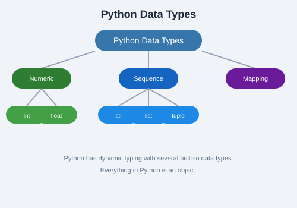

Python uses indentation to define code blocks instead of curly braces {}. The standard is 4 spaces per indentation level. Comments are written with #:
# This is a comment
x = 5 # inline comment
if x > 0:
print("Positive") # indented blockPython is dynamically typed — you do not need to declare a variable's type. Its type is inferred at runtime.
name = "Alice" # str
age = 30 # int
pi = 3.14159 # float
is_active = True # bool
nothing = None # NoneTypea, b, c = 1, 2, 3
x = y = z = 0Variable names prefixed with an underscore (e.g. _secret) are conventionally considered "private" — a hint to other developers, not enforced by the language.
Python's fundamental built-in types include:
int — integer numbers (unbounded)float — floating-point numbersstr — Unicode textbool — True or FalseNoneType — the None value (null)int("42") # 42
str(3.14) # "3.14"
float("2.5") # 2.5
bool(1) # True
bool(0) # False+ - * / # add, subtract, multiply, divide
// # floor division
% # modulus (remainder)
** # exponentiation== != < > <= >=and or not= += -= *= /= //= %= **=& | ^ ~ << >>score = 85
if score >= 90:
grade = "A"
elif score >= 80:
grade = "B"
elif score >= 70:
grade = "C"
else:
grade = "F"command = "quit"
match command:
case "quit":
print("Exiting...")
case "help":
print("Available commands: ...")
case _:
print(f"Unknown: {command}")# Range-based
for i in range(5):
print(i) # 0 1 2 3 4
# Iterate over a sequence
for char in "hello":
print(char)
# With enumerate
for idx, val in enumerate(["a", "b", "c"]):
print(idx, val)count = 0
while count < 5:
print(count)
count += 1for n in range(10):
if n == 3:
continue # skip 3
if n == 7:
break # stop at 7
print(n)
# pass is a no-op placeholder
def unfinished_function():
pass
elif (not else if or elsif). Indentation errors are a common beginner mistake — always check your whitespace.
Write a program that asks the user for a number and prints whether it is positive, negative, or zero. Then extend it so the user can enter up to 5 numbers and the program prints the sum and average. Use a for loop and a while loop — try both versions.